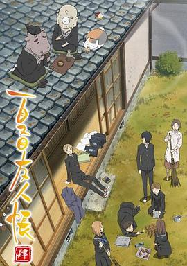

夏目友人帐 第四季 / 夏目友人帳 肆
又名：妖怪联络簿 四(台) / 夏目友人帐Ⅳ / Natsume's Book of Friends Ⅳ
作品信息
| 导演 | 大森贵弘 / 小岛正幸 / 黑柳利充 / 园田雅裕 / 出合小都美 / 松田清 |
| 编剧 | 绿川幸 / 村井贞之 / 吉永亚矢 / 大野木宽 / 花田十辉 |
| 主演 | 神谷浩史 / 井上和彦 / 小林沙苗 / 石田彰 |
| 类型 | 动画 / 奇幻 |
| 制片国家/地区 | 日本 |
| 语言 | 日语 |
| 首播 | 2012-01-02(日本) |
| 季数 | 4 |
| 集数 | 13 |
| 单集片长 | 24分钟 |
| IMDb | tt2722574 |
最后一次看到是 2026-08-12T21:13:10+08:00 · 豆瓣原页